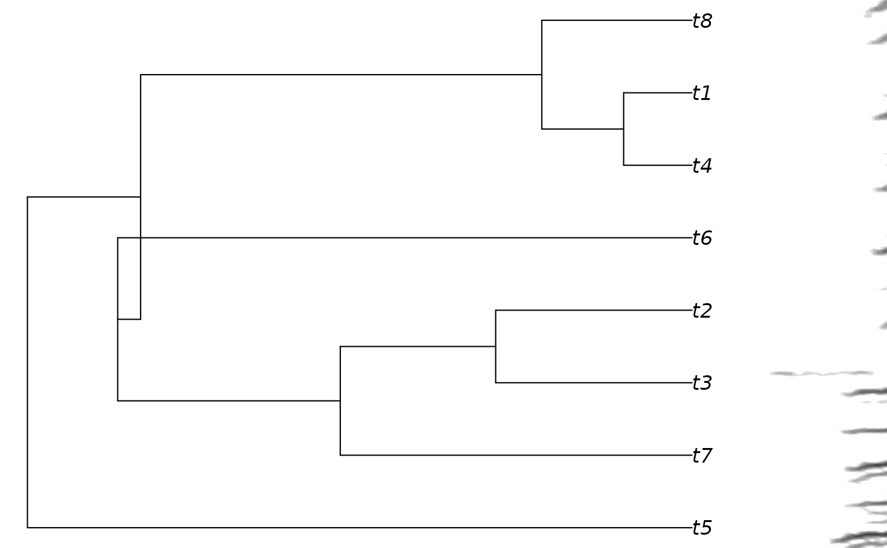
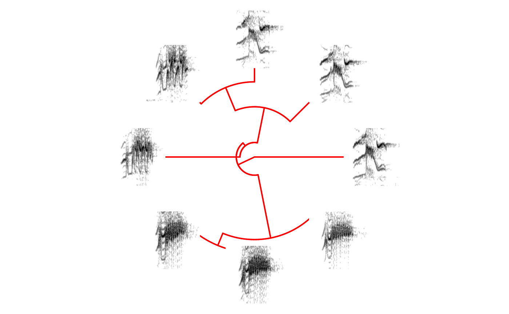

phylo_spectro Add spectrograms to the tips of an objects of class phylo.
Arguments
- X
'selection_table', 'extended_selection_table' or data frame containing columns for sound file name (sound.files), selection number (selec), and start and end time of signals (start and end). 'top.freq' and 'bottom.freq' columns are optional. In addition, the data frame must include the column 'tip.label' that contains the names of the tip labels found in the tree (e.g. '
tree$tip.label). This column is used to match rows and tip labels. If using an 'extended_selection_table' the sound files are not required (seeselection_table).- tree
Object of class 'phylo' (i.e. a phylogenetic tree). Ultrametric trees may produce better results. If
NULL(default) then the current working directory is used. Tip labels must match the names provided in the 'tip.label' column in 'X' (see 'X' argument).- type
Character string of length 1 specifying the type of phylogeny to be drawn (as in
plot.phylo). Only 'phylogram' (default) and 'fan' are allowed.- par.mar
Numeric vector with 4 elements, default is
rep(1, 4). Specifies the number of lines in inner plot margins where axis labels fall, with form c(bottom, left, top, right). Seepar. See 'inner.par' argument for controlling spectrogram margins.- size
Numeric vector of length 1 controlling the relative size of spectrograms. Higher numbers increase the height of spectrograms. Default is 1. Numbers between range
c(>0, Inf)are allowed.- offset
Numeric vector of length 1 controlling the space between tips and spectrograms. Default is 0.
- path
Character string containing the directory path where the sound files are located. If
NULL(default) then the current working directory is used.- ladder
Character string controlling whether the phylogeny is ladderized (i.e. the internal structure of the tree is reorganized to get the ladderized effect when plotted). Only 'left' of 'right' values are accepted. Default is
NULL(no ladderization). Seeladderizefor more details.- horizontal
Logical. Controls whether spectrograms in a fan phylogeny are place in a horizontal position
FALSEor in the same angle as the tree tips. Currently only horizontal spectrograms are available.- axis
Logical to control if the Y and X axis of spectrograms are plotted (see
box). Default isTRUE.- box
Logical to control if the box around spectrograms is plotted (see
box). Default isTRUE.- collevels
A numeric vector of length 3. Specifies levels to partition the amplitude range of the spectrogram (in dB). The more levels the higher the resolution of the spectrogram. Default is seq(-40, 0, 1). seq(-115, 0, 1) will produces spectrograms similar to other acoustic analysis software packages.
- ...
Additional arguments to be passed to the internal spectrogram creating function (
spectrograms) or phylogeny plotting function (plot.phylo) for customizing graphical output. Only rightwards phylogenies can be plotted.
Value
A phylogenetic tree with spectrograms on tree tips is plotted in the current graphical device.
Details
The function add the spectrograms of sounds annotated in a selection table ('X' argument) onto the tips of a phylogenetic tree.
The 'tip.label' column in 'X' is used to match spectrograms and tree tips. The function uses internally the plot.phylo function to plot the tree
and the spectrograms function to create the spectrograms. Arguments for both of these functions
can be provided for further customization.
References
Araya-Salas, M., & Smith-Vidaurre, G. (2017). warbleR: An R package to streamline analysis of animal acoustic signals. Methods in Ecology and Evolution, 8(2), 184-191.
See also
Other spectrogram creators:
color_spectro(),
freq_DTW(),
multi_DTW(),
snr_spectrograms(),
spectrograms(),
track_freq_contour()
Author
Marcelo Araya-Salas (marcelo.araya@ucr.ac.cr)
Examples
{
# \donttest{
# First set empty folder
# save example sound files
data(list = c("Phae.long1", "Phae.long2", "Phae.long3", "lbh_selec_table"))
writeWave(Phae.long1, file.path(tempdir(), "Phae.long1.wav"))
writeWave(Phae.long2, file.path(tempdir(), "Phae.long2.wav"))
writeWave(Phae.long3, file.path(tempdir(), "Phae.long3.wav"))
# set spectrogram options (can be done at the phylo_spectro() function too)
warbleR_options(wl = 200, ovlp = 90, flim = "frange", wav.path = tempdir())
# subset example selection table
X <- lbh_selec_table[1:8, ]
# create random tree (need ape to be installed)
set.seed(1)
tree <- ape::rtree(nrow(X))
# Force tree to be ultrametric
tree <- ape::chronoMPL(tree)
# add tip label column to example selection table (just for the sake of the example)
X$tip.label <- tree$tip.label
# print phylogram with spectros
phylo_spectro(X = X, tree = tree, par.mar = c(0, 0, 0, 8), size = 2)
# no margin in spectrograms and showing tip labels (higher offset)
phylo_spectro(X = X, tree = tree, offset = 0.1, par.mar = c(0, 0, 0, 6),
inner.mar = rep(0, 4), size = 2, box = FALSE, axis = FALSE)
# print fan tree and no margin in spectrograms
phylo_spectro(X = X, tree = tree, offset = 0.6, par.mar = rep(3, 4),
inner.mar = rep(0, 4), size = 2, type = "fan", show.tip.label = FALSE, box = FALSE, axis = FALSE)
# changing edge color and witdh
phylo_spectro(X = X, tree = tree, offset = 0.2, par.mar = rep(3, 4), inner.mar = rep(0, 4),
size = 2, type = "fan", show.tip.label = FALSE, edge.color = "red", edge.width = 2,
box = FALSE, axis = FALSE)
# plotting a tree representing cross-correlation distances
xcorr_mat <- cross_correlation(X, bp = c(1, 10))
xc.tree <- ape::chronoMPL(ape::as.phylo(hclust(as.dist(1 - xcorr_mat))))
X$tip.label <- xc.tree$tip.label
phylo_spectro(X = X, tree = xc.tree, offset = 0.03, par.mar = rep(3, 4),
inner.mar = rep(0, 4), size = 0.3, type = "fan", show.tip.label = FALSE,
edge.color = "red", edge.width = 2, box = FALSE, axis = FALSE)
# }
}

